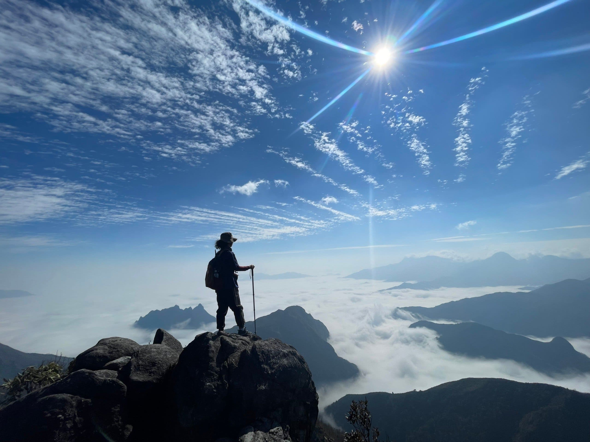
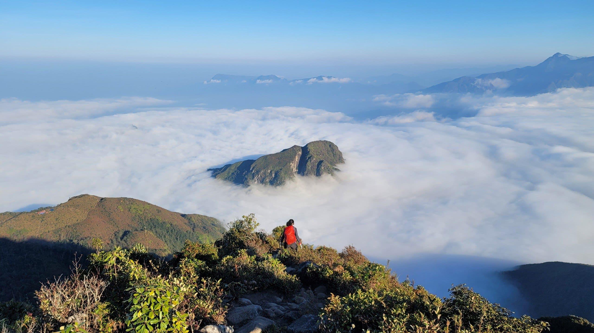
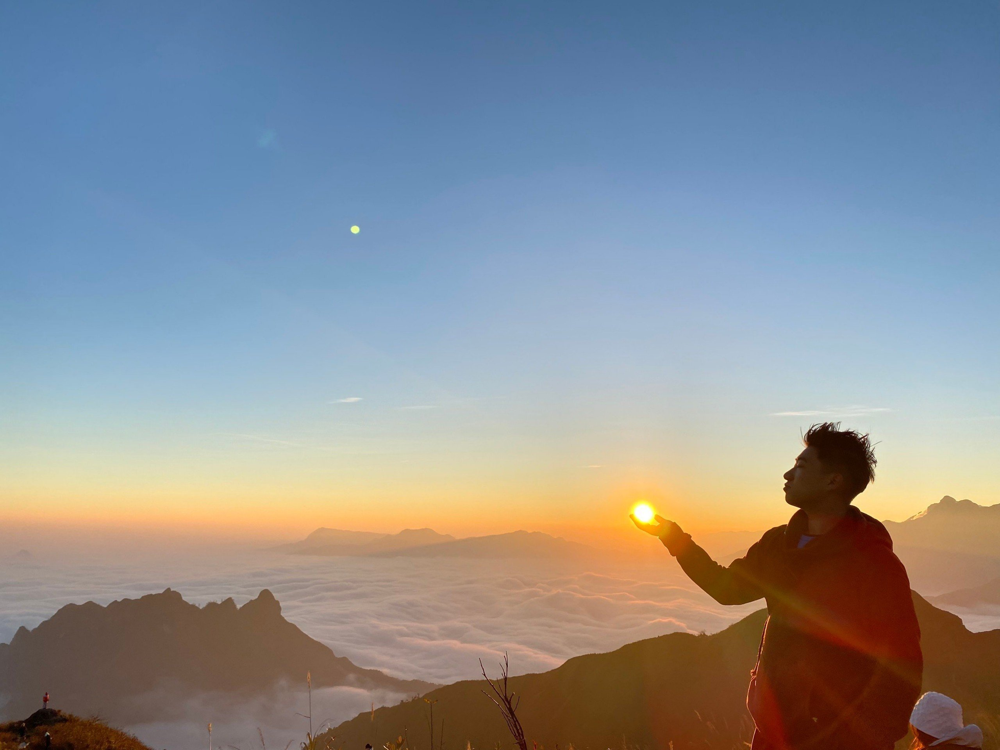
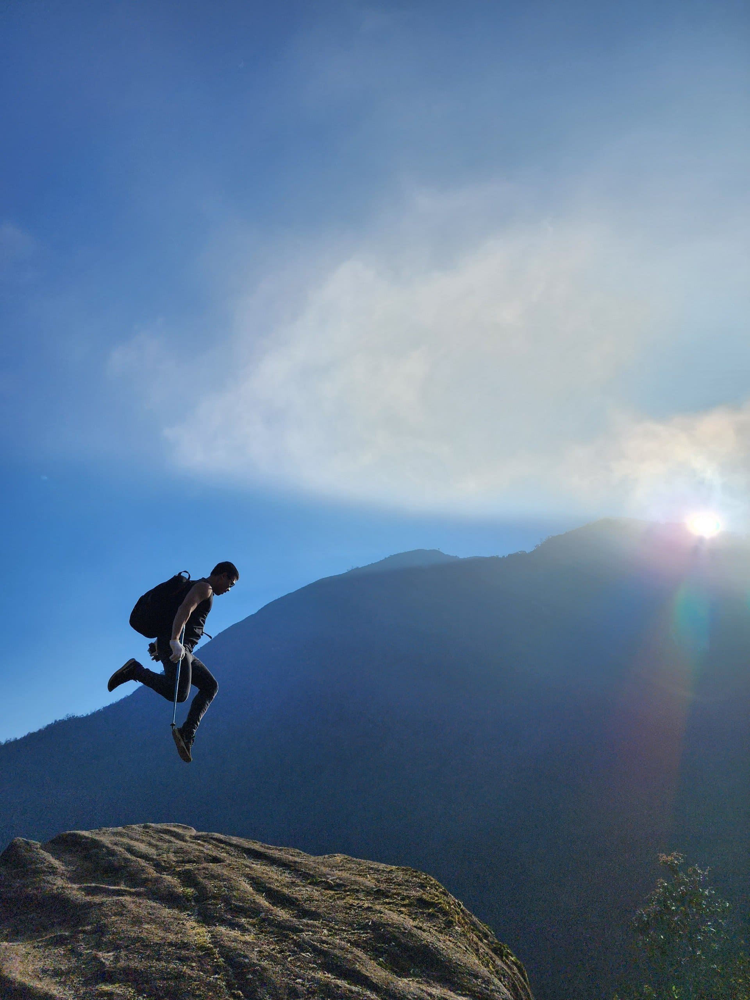
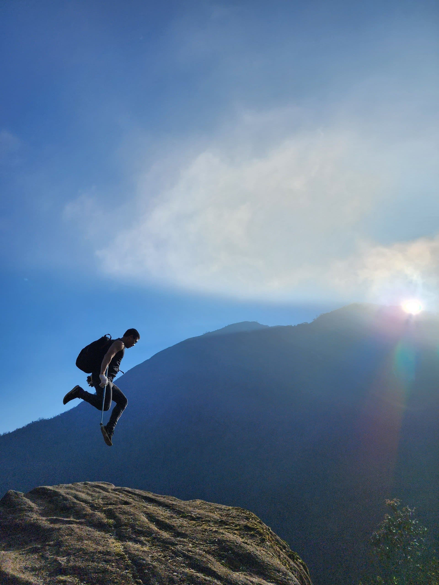
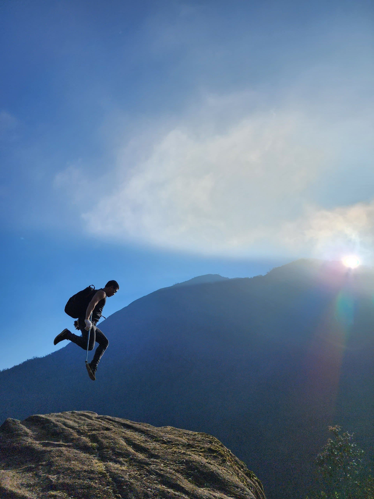
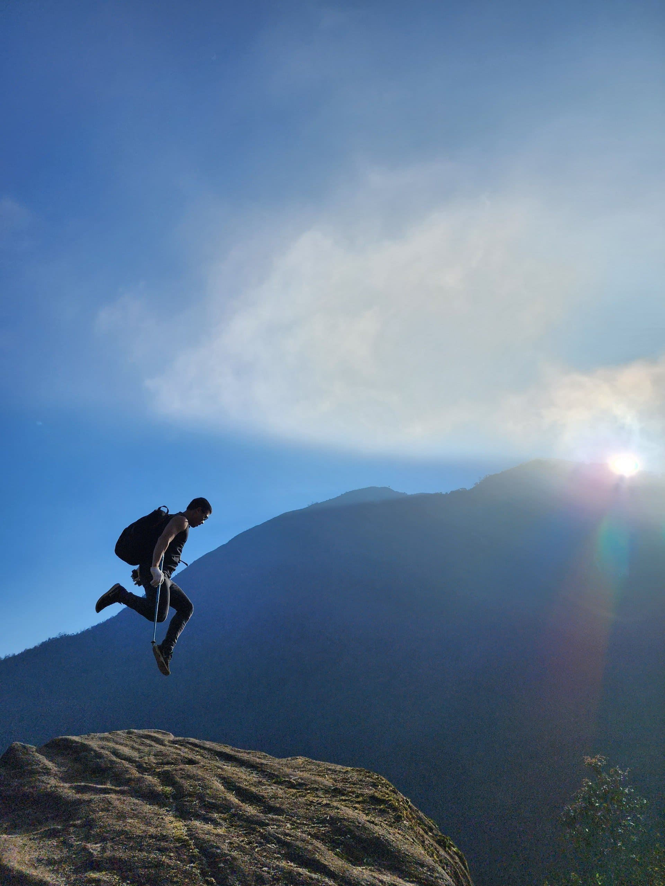

Trải nghiệm của khách hàng



 


📞 Hotline: 0123 456 789 | 📧 Email: contact@dulich.com
Đỉnh Ky Quan San với độ cao 3046m là ngọn núi cao thứ 4
của
Việt Nam, ranh giới tự nhiên của 2 tỉnh Lai Châu và Lào
Cai.
Với tên gọi quen thuộc là Bạch Mộc Lương Tử, Ky Quan San
được đánh giá là một trong những địa điểm săn mây, săn
bình
minh và hoàng hôn đẹp nhất Việt Nam.
Có thể nói, “bình minh trên mây” đã trở thành thương
hiệu
của ngọn núi mang tên Ky Quan San. Địa hình đa dạng cùng
những con dốc dài và thách thức, đòi hỏi các bạn phải
chuẩn
bị kĩ năng và nền tảng thể lực tốt. Tuy nhiên, giá trị
của
cảnh đẹp nơi đây luôn tương xứng với nỗ lực mà các bạn
phải
bỏ ra khi chinh phục đỉnh cao này.
Tour ghép thường khởi hành từ Hà Nội vào đêm thứ 5. Để
nhận
lịch tour chính xác từng tuần, quý khách vui lòng liên
hệ
với Viettrekking.
Tour riêng có thể được tổ chức bất kì ngày nào trong
tuần
theo yêu cầu với chi phí khác.
Lịch trình: 3N2Đ
12 - 13 người
Tour ghép
Độ khó: Thách thức
Quãng đường trekking: 32km
Tổ chức hàng tuần
